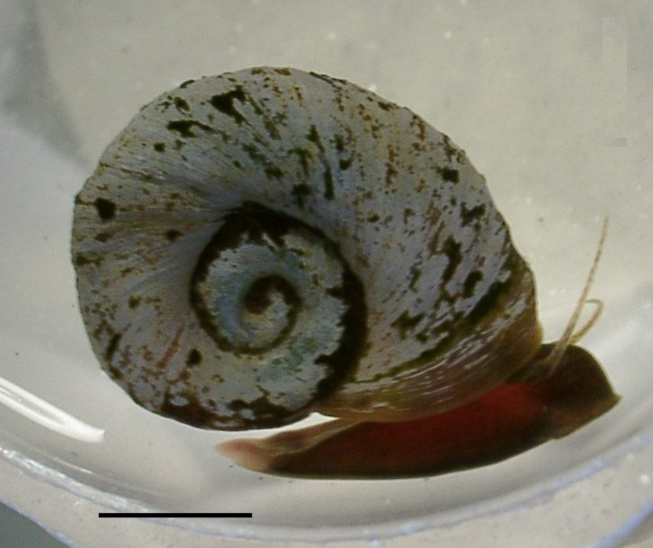

चपटा घोंघाRamshorn Snail
Indoplanorbis exustus · Bulinidae · MOL-0004

- Scientific name
- Indoplanorbis exustus (Deshayes, 1833)
- Family
- Bulinidae
- Hindi
- चपटा घोंघा
- Status here
- native
- IUCN
- not evaluated
When to look कब देखें
Present all year.
चपटा घोंघा / Ramshorn Snail
Indoplanorbis exustus (Deshayes, 1833) — Bulinidae
चपटा घोंघा (रामहॉर्न स्नेल) — पूर्वी उत्तर प्रदेश के तालाबों, पोखरों और धान के खेतों में पाया जाने वाला एक बहुत ही सामान्य निवासी मीठे पानी का घोंघा (freshwater snail) है। इसका खोल (shell) चपटा, चक्राकार और डिस्क जैसा होता है, जो भेड़े के सींग (ram's horn) की तरह कुंडलित होता है, जिसके कारण इसे यह नाम मिला है। यह घोंघा जलीय वनस्पतियों पर रेंगता है और सड़े-गले कार्बनिक पदार्थों को खाता है। पशु चिकित्सा और सार्वजनिक स्वास्थ्य के दृष्टिकोण से यह घोंघा अत्यंत महत्वपूर्ण है; यह Schistosoma spindale नामक परजीवी फ्लूक (trematode fluke) का प्राथमिक मध्यवर्ती मेजबान (intermediate host) है, जो पूर्वी उत्तर प्रदेश में पालतू मवेशियों (गाय, भैंस) में आंतों के शिस्टोसोमियासिस (intestinal schistosomiasis) और बिलहारज़िया जैसी गंभीर बीमारियों का कारण बनता है।
Quick Identification त्वरित पहचान
| Feature | Description |
|---|---|
| Shell Shape | Flat, discoidal, and disc-shaped shell; whorls are coiled in a single horizontal plane |
| Shell Size | Shell diameter 12–18 mm; shell height (thickness) 5–8 mm |
| Colouration | Light brownish-grey, yellowish-brown, or dark horn-color; body is reddish-black |
| Coiling | Sinistral coiling (left-handed), but the shell is carried flat (pseudodextral) |
| Aperture | Large, wide, ear-shaped shell opening lacking a hard lid (operculum) |
| Tentacles | Two long, thin, thread-like tentacles; eyes are situated at their inner base |
Field tip: Search among floating water hyacinth roots or submerged leaves of lotus plants in a village pond. Look for small, flat, disc-like coiled shells. If placed in a clear water container, you will see the snail extend a dark, reddish-brown body with two long, thin, thread-like tentacles.
Morphology आकारिकी
Biometrics (typical measurements for adult specimens in local ponds):
| Measurement | Range |
|---|---|
| Shell diameter | 12.0–18.0 mm |
| Shell height | 5.0–8.0 mm |
Body details: The shell is planorboid (flat-coiled), containing 4–5 rapidly expanding whorls separated by deep sutures. The shell walls are relatively thin, marked with fine transverse growth lines. The aperture is large, ear-shaped, with a simple, sharp outer lip. The living animal is dark brown or reddish-black. Unlike most other mollusks, its blood contains hemoglobin, giving it a reddish color and allowing it to breathe efficiently in oxygen-depleted waters. It lacks an operculum (shell lid) to close the opening.
Behaviour & Ecology व्यवहार और पारिस्थितिकी
Air-breathing pond crawler.
- Breathing style: Pulmonate snail possessing a vascularized lung cavity (pulmonary sac) rather than gills. It regularly crawls to the surface or uses a small tube to breathe atmospheric air.
- Estivation survival: During the hot, dry summer months when village ponds dry up, the snail burrows into the damp bottom mud. It secretes a protective layer of dried mucus (epiphragm) over the shell opening, entering dormancy (estivation) for several weeks until the rains return.
- Locomotion: Slow glider, moving on a broad, muscular foot over mud and plant stems.
Ecological Role पारिस्थितिक भूमिका
Decomposer and disease vector.
- Detritivorous clearing: Feeds on decaying plant matter, algae, and organic debris, assisting in organic nutrient recycling in stagnant pond systems.
- Intermediate host: Acts as the obligate intermediate host for larval stages (cercariae) of veterinary trematodes, facilitating their transmission to mammalian hosts.
- Trophic resource: Eaten in large numbers by wetland birds, bottom-feeding carps, and freshwater turtles.
Life Cycle / Phenology जीवन चक्र
- Breeding: Peak reproduction occurs during the warm, wet monsoon months (July–September).
- Egg laying: Hermaphroditic. Cross-fertilization is typical. The snail deposits crescent-shaped, flat, gelatinous egg capsules containing 10–30 yellow eggs on the underside of floating leaves.
- Development: Eggs hatch in 10–14 days. Young snails emerge directly as miniature crawl-stage snails, without any free-swimming larval phase, reaching sexual maturity in 2–3 months.
Host Plants or Prey आहार
Diet: Herbivorous and detritivorous.
- Decaying plants: Water Hyacinth (Eichhornia crassipes [FLR-0013 Water Hyacinth]), Lotus (Nelumbo nucifera [FLR-0005 Lotus]), and submerged weeds.
- Microflora: Microscopic green algae, diatoms, and organic detritus in bottom mud.
Predators / Natural Enemies शत्रु
- Birds: Asian Openbills (such as [BRD-0021 Asian Openbill] - check ID) and Bronze-winged Jacanas (such as [BRD-0040 Bronze-winged Jacana]) feed on them.
- Fish: Bottom-feeding carps, especially Kalbasu (such as [FSH-0010 Kalbasu]), crush and eat young snails.
- Turtles: Indian Flapshell Turtles feed on them in shallow waters.
Agricultural / Human Relevance कृषि प्रासंगिकता
Veterinary vector of livestock disease.
- Veterinary impact: Serves as the primary intermediate host for the blood fluke Schistosoma spindale and nasal fluke Schistosoma nasale. The larval flukes release from the snails into pond water, boring through the skin of bathing cattle and buffaloes. This causes intestinal schistosomiasis and nasal granuloma (snoring disease), leading to severe weight and milk loss.
- Weed management: Stagnant ponds choked with water hyacinth mats support massive snail populations. Clearing weeds and restricting cattle from drinking from infested ponds are key local control measures.
Expected Locally स्थानीय रूप से अपेक्षित
Not a field record. Written from published accounts for eastern Uttar Pradesh. No confirmed local sighting yet — if you have seen it, that is what the atlas needs.
अभी तक स्थानीय पुष्टि नहीं। यह विवरण प्रकाशित स्रोतों से है, किसी अवलोकन से नहीं।
Abundant in all blocks of Basti district, especially in Vikramjot, Vikrampur, and Harraiya blocks where agricultural drainage ditches and village ponds (pokhra) are common. They are frequently seen clustered on the roots of floating water hyacinths.
Distribution वितरण
Global range: Widespread across the Indo-Malayan region, covering Pakistan, India, Nepal, Bangladesh, Sri Lanka, Myanmar, Thailand, Malaysia, and Indonesia.
In India: Widespread in all freshwater ecosystems of the plains.
In Uttar Pradesh: Abundant resident across all rural and wetland districts.
In Basti district / eastern UP: Highly common in all lowland wetlands.
Research Questions शोध प्रश्न
Anyone can investigate these | कोई भी इन प्रश्नों की जाँच कर सकता है
- What is the infection rate of Schistosoma flukes in Ramshorn Snails collected from Basti village ponds? / बस्ती के ग्रामीण तालाबों से एकत्रित किए गए चपटे घोंघों में शिस्टोसोमा फ्लूक (Schistosoma flukes) की संक्रमण दर क्या है? — Dissect snails in a laboratory to check for parasite cercariae.
- Does the removal of water hyacinth mats lead to a significant decline in local Ramshorn Snail populations? / क्या जलकुंभी की चटाइयों को हटाने से स्थानीय चपटे घोंघे की आबादी में महत्वपूर्ण गिरावट आती है? — Compare snail counts before and after weeding.
- How long can a Ramshorn Snail survive in dry mud during summer estivation? — Monitor survival rate of buried snails in drying clay beds.
- Do bottom-feeding Kalbasu fish prefer feeding on Ramshorn Snails compared to other pond snails? — Conduct choice feeding experiments in a tank.
- Can children collect empty snail shells from the pond bank and sort them by size to see which is most common? — A simple diagnostic sorting exercise near village waters.
Similar Species मिलती-जुलती प्रजातियाँ
| Species | Key Difference | हिंदी |
|---|---|---|
| Pila globosa (Apple Snail) | Much larger (40–60 mm); globose, round shell; has a calcareous operculum (lid); yellow-green | सेब घोंघा — विशाल गोल आकार, ढक्कन युक्त |
| Lymnaea acuminata (Pond Snail) | Shell is elongated, spire-shaped; transparent; lacks the flat, discoidal coiling | मीठे पानी का घोंघा — शंक्वाकार खोल |
| Gyraulus convexiusculus (Flat Snail) | Much smaller shell diameter (4–6 mm); thin, transparent whorls; pale yellow-brown | छोटा चपटा घोंघा — अत्यंत छोटा आकार |
Field rule: Flat, discoidal shell (~12–18 mm) resembling a coiled ram's horn, left-handed coiling, and a dark reddish-brown body with thread-like tentacles identify the Ramshorn Snail.
Taxonomy & Classification वर्गीकरण
Original description. Gérard Paul Deshayes described the Ramshorn Snail as Planorbis exustus in 1833 in Voyage aux Indes-Orientales... pendant les années 1825–1829 (p. 417). The type locality was India. The genus name Indoplanorbis combines Indo (India) and Planorbis (flat-ringed), describing its geography and shell shape. The specific name exustus is Latin for "burnt" or "scorched", referring to the dark, horn-colored shell.
Subspecies. Monotypic — no subspecies are currently recognized.
Family and order placement. Placed in the order Hygrophila, family Bulinidae (often placed in Planorbidae), subfamily Bulininae.
Phylogenetic notes. Indoplanorbis exustus is the sole representative of its genus, representing a distinct South Asian branch of pulmonate freshwater snails that developed specialized respiratory adaptations to survive in low-oxygen tropical pools.
IUCN status rationale. Not evaluated (NE) by the IUCN Red List. It is extremely common and highly abundant, with no immediate conservation threats.
Photo Gallery फोटो गैलरी
References संदर्भ
- Deshayes, G. P. (1833). Voyage aux Indes-Orientales, par le nord de l'Europe... pendant les années 1825, 1826, 1827, 1828, 1829. Zoologie. Mollusques. Paris: A. Bertrand, p. 417. [original description]
- Preston, H. B. (1915). The Fauna of British India, including Ceylon and Burma. Mollusca. Freshwater Gastropoda & Pelecypoda. Taylor and Francis, London, p. 115.
- Subba Rao, N. V. (1989). Handbook: Freshwater Molluscs of India. Zoological Survey of India, Calcutta.
- Agrawal, M. C., & Rao, J. R. (2004). Indian schistosomes: a review. Journal of Veterinary Medicine Series A, 51(9‐10), 441-449.
- ZSI Checklist — Freshwater Mollusca of Uttar Pradesh (2014).
- GBIF Occurrence Data — Indoplanorbis exustus, Uttar Pradesh (2010–2025).
Source file: species/fauna/mollusks/ramshorn_snail.md